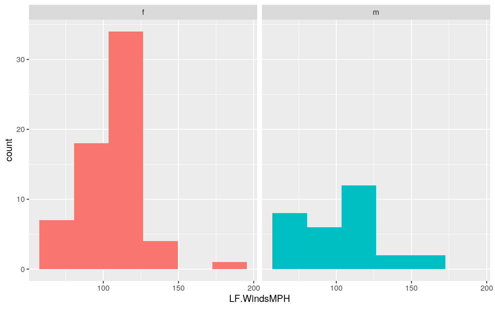
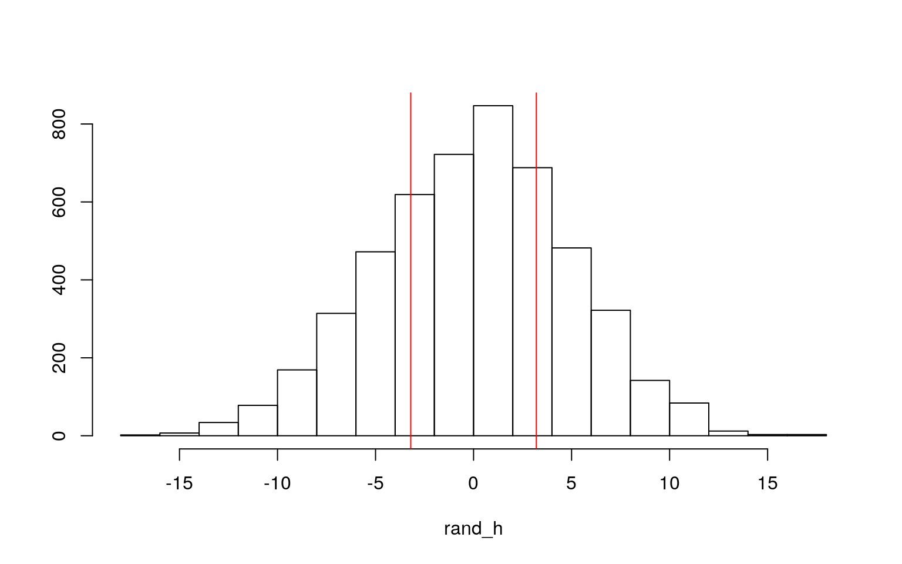
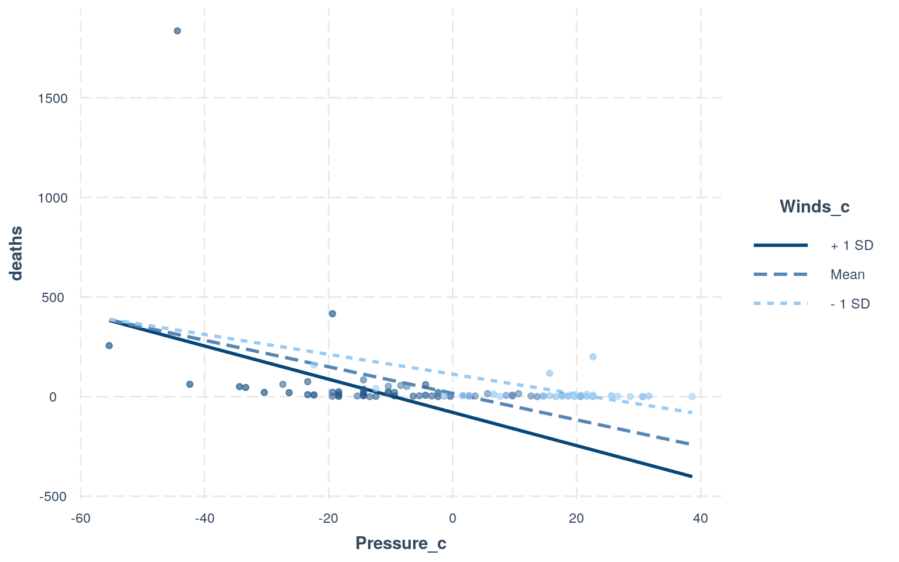
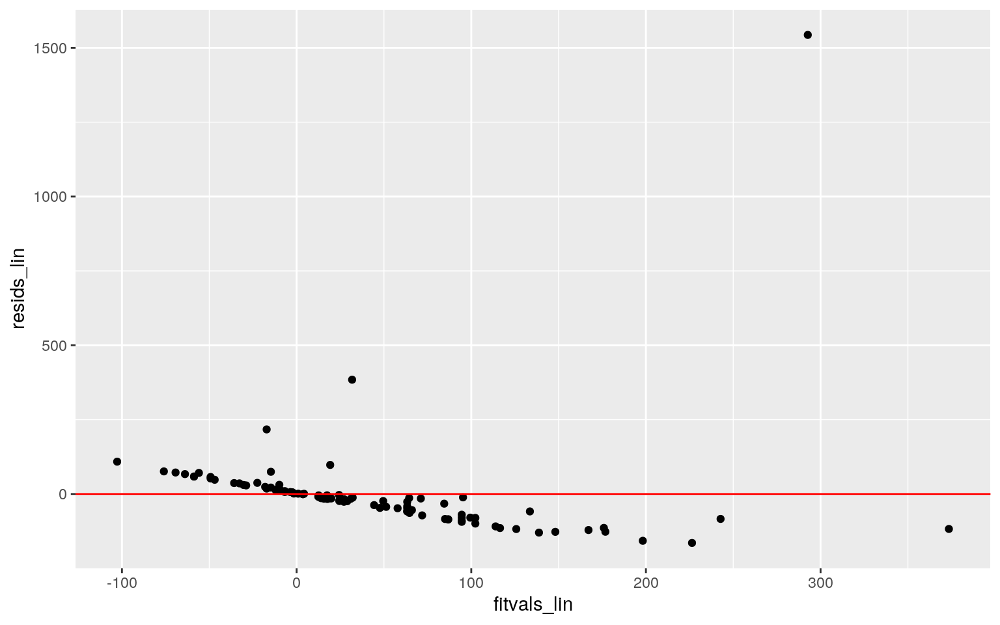
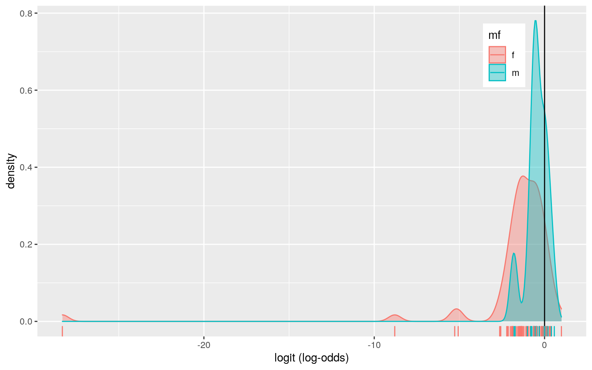
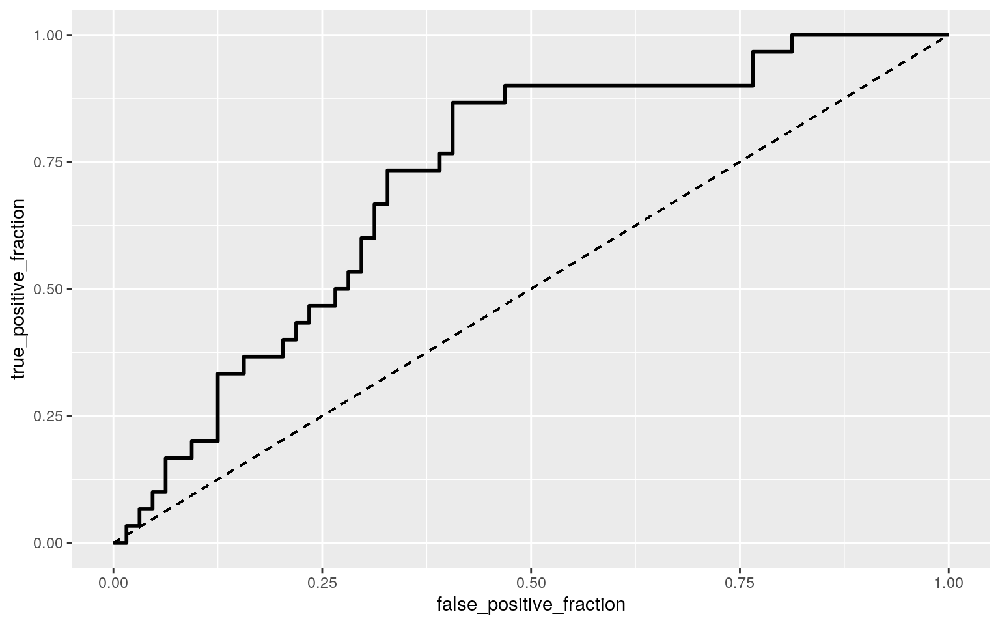
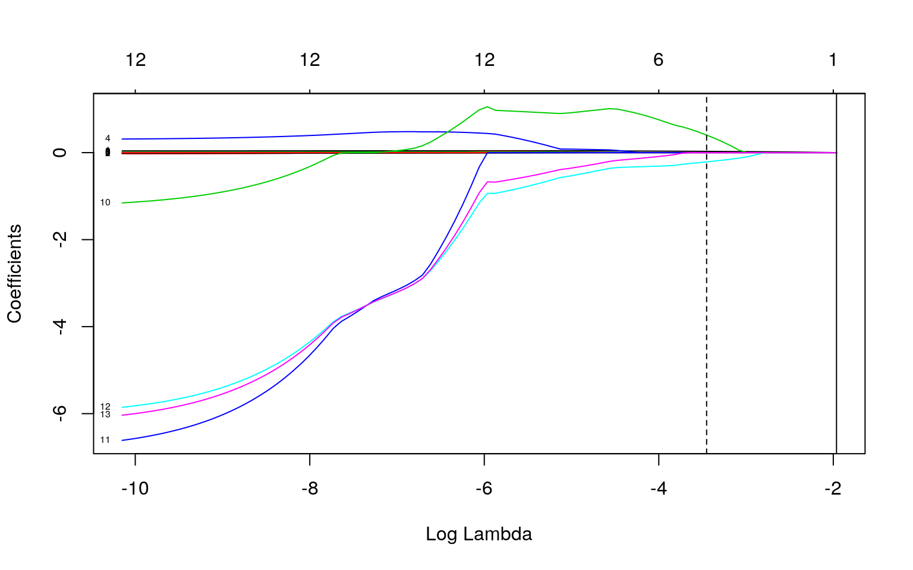

The dataset I'm working with has descriptors of the US Atlantic Hurricanes with the main variables "Name" (hurricane name), "Year" (hurricane year), "LF.WindsMPH" (maximum sustained windspeed), "LF.PressureMB" (atmospheric pressure at landfall), "firstLF" (date of first landfall), "BaseDamage" (property damage in millions of dollars), "deaths" (number of continental US deaths), and "mf" (gender of name). These variables measure the force of the hurricane, its affect on various states and people's lives, and its year of occurance and name. This dataset has 94 observations and 12 variables.
install.packages('DAAG', repos= 'https://cran.r-project.org/src/contrib/Archive/DAAG/DAAG_1.22.tar.gz', type='source')
library(DAAG)
head(hurricNamed, 3)## Name Year LF.WindsMPH LF.PressureMB LF.times BaseDamage
NDAM2014 AffectedStates firstLF
## Easy1950 Easy 1950 120 958 1 3.30 1870 FL 1950-09-04
## King1950 King 1950 130 955 1 28.00 6030 FL 1950-10-17
## Able1952 Able 1952 85 985 1 2.75 170 SC 1952-08-30
## deaths mf BaseDam2014
## Easy1950 2 f 32.41942
## King1950 4 m 275.07386
## Able1952 3 m 24.56943hurricane_name <- hurricNamed #Creating WindSpeed Category Categorical Variable
hurricane <- hurricane_name %>% mutate(windsMPH_cat = case_when(LF.WindsMPH>=74 & LF.WindsMPH<=95 ~ "One", LF.WindsMPH>=96 & LF.WindsMPH<=110 ~ "Two", LF.WindsMPH>=111 & LF.WindsMPH<=129 ~ "Three", LF.WindsMPH>=130 & LF.WindsMPH<=156 ~ "Four", LF.WindsMPH>=157 ~ "Five"))
#MANOVA
man_h <- manova(cbind(LF.WindsMPH, LF.PressureMB, BaseDam2014, BaseDamage, NDAM2014, deaths) ~ windsMPH_cat, data=hurricane)
summary(man_h)## Df Pillai approx F num Df den Df Pr(>F)
## windsMPH_cat 4 1.5287 8.9694 24 348 < 2.2e-16 ***
## Residuals 89
## ---
## Signif. codes: 0 '***' 0.001 '**' 0.01 '*' 0.05 '.' 0.1
' ' 1 #ANOVA
summary.aov(man_h)## Response LF.WindsMPH :
## Df Sum Sq Mean Sq F value Pr(>F)
## windsMPH_cat 4 45411 11352.9 639.93 < 2.2e-16 ***
## Residuals 89 1579 17.7
## ---
## Signif. codes: 0 '***' 0.001 '**' 0.01 '*' 0.05 '.' 0.1
' ' 1
##
## Response LF.PressureMB :
## Df Sum Sq Mean Sq F value Pr(>F)
## windsMPH_cat 4 26670 6667.5 61.878 < 2.2e-16 ***
## Residuals 89 9590 107.8
## ---
## Signif. codes: 0 '***' 0.001 '**' 0.01 '*' 0.05 '.' 0.1
' ' 1
##
## Response BaseDam2014 :
## Df Sum Sq Mean Sq F value Pr(>F)
## windsMPH_cat 4 1.4109e+09 352717324 2.3404 0.0611 .
## Residuals 89 1.3413e+10 150708791
## ---
## Signif. codes: 0 '***' 0.001 '**' 0.01 '*' 0.05 '.' 0.1
' ' 1
##
## Response BaseDamage :
## Df Sum Sq Mean Sq F value Pr(>F)
## windsMPH_cat 4 420294824 105073706 0.9502 0.439
## Residuals 89 9841762139 110581597
##
## Response NDAM2014 :
## Df Sum Sq Mean Sq F value Pr(>F)
## windsMPH_cat 4 6.5131e+09 1628283466 9.457 2.038e-06 ***
## Residuals 89 1.5324e+10 172177856
## ---
## Signif. codes: 0 '***' 0.001 '**' 0.01 '*' 0.05 '.' 0.1
' ' 1
##
## Response deaths :
## Df Sum Sq Mean Sq F value Pr(>F)
## windsMPH_cat 4 119607 29902 0.7753 0.5441
## Residuals 89 3432446 38567 #Post-hoc T Tests
pairwise.t.test(hurricane$LF.WindsMPH,hurricane$windsMPH_cat, p.adj="none") ##
## Pairwise comparisons using t tests with pooled SD
##
## data: hurricane$LF.WindsMPH and hurricane$windsMPH_cat
##
## Five Four One Three
## Four <2e-16 - - -
## One <2e-16 <2e-16 - -
## Three <2e-16 <2e-16 <2e-16 -
## Two <2e-16 <2e-16 <2e-16 <2e-16
##
## P value adjustment method: nonepairwise.t.test(hurricane$LF.PressureMB,hurricane$windsMPH_cat, p.adj="none") ##
## Pairwise comparisons using t tests with pooled SD
##
## data: hurricane$LF.PressureMB and hurricane$windsMPH_cat
##
## Five Four One Three
## Four 0.0056 - - -
## One 9.0e-14 3.1e-16 - -
## Three 2.0e-05 0.0173 < 2e-16 -
## Two 3.4e-09 6.7e-08 3.1e-07 7.2e-07
##
## P value adjustment method: nonepairwise.t.test(hurricane$NDAM2014,hurricane$windsMPH_cat, p.adj="none") ##
## Pairwise comparisons using t tests with pooled SD
##
## data: hurricane$NDAM2014 and hurricane$windsMPH_cat
##
## Five Four One Three
## Four 0.01386 - - -
## One 3.7e-06 0.00026 - -
## Three 9.3e-05 0.02208 0.02178 -
## Two 1.3e-05 0.00189 0.55811 0.15321
##
## P value adjustment method: none #Probability of at least One Type I Error: 1 MANOVA, 6 ANOVAS, 30 post-hoc t tests were performed, with a total of 37 tests
1-(.95^37)## [1] 0.85010970.05/37 #Bonferroni Correction## [1] 0.001351351 #Post-hoc T Tests with Bonferroni Correction
pairwise.t.test(hurricane$LF.WindsMPH,hurricane$windsMPH_cat, p.adj="bonferroni")##
## Pairwise comparisons using t tests with pooled SD
##
## data: hurricane$LF.WindsMPH and hurricane$windsMPH_cat
##
## Five Four One Three
## Four <2e-16 - - -
## One <2e-16 <2e-16 - -
## Three <2e-16 <2e-16 <2e-16 -
## Two <2e-16 <2e-16 <2e-16 <2e-16
##
## P value adjustment method: bonferronipairwise.t.test(hurricane$LF.PressureMB,hurricane$windsMPH_cat, p.adj="bonferroni") ##
## Pairwise comparisons using t tests with pooled SD
##
## data: hurricane$LF.PressureMB and hurricane$windsMPH_cat
##
## Five Four One Three
## Four 0.0558 - - -
## One 9.0e-13 3.1e-15 - -
## Three 0.0002 0.1727 < 2e-16 -
## Two 3.4e-08 6.7e-07 3.1e-06 7.2e-06
##
## P value adjustment method: bonferronipairwise.t.test(hurricane$NDAM2014,hurricane$windsMPH_cat, p.adj="bonferroni") ##
## Pairwise comparisons using t tests with pooled SD
##
## data: hurricane$NDAM2014 and hurricane$windsMPH_cat
##
## Five Four One Three
## Four 0.13858 - - -
## One 3.7e-05 0.00257 - -
## Three 0.00093 0.22077 0.21784 -
## Two 0.00013 0.01892 1.00000 1.00000
##
## P value adjustment method: bonferroni #Assumptions:
library(rstatix)
hurricane_assump <- hurricane %>% filter(!windsMPH_cat == "Five")
group <- hurricane_assump$windsMPH_cat
DVs <- hurricane_assump %>% select(LF.WindsMPH, LF.PressureMB, BaseDam2014, BaseDamage, NDAM2014, deaths)
#Test multivariate normality for each group (null: assumption met)
sapply(split(DVs,group), mshapiro_test)## Four One Three Two
## statistic 0.452971 0.1800146 0.220439 0.522623
## p.value 4.135612e-06 4.013769e-13 3.926766e-11
5.12654e-07A one-way MANOVA was conducted to determine the effects of the hurricane windspeed category (One, Two, Three, Four, Five) on six dependent variables (LF.WindsMPH, LF.PressureMB, BaseDam2014, BaseDamage, NDAM2014, deaths). The windspeed categories were created as a variable using the existing variable LF.WindsMPH based on the Saffir-Simpson Hurricane Wind Scale. MANOVA assumptions of multivariate normality for each group were violated because the p values for each group were less than 0.05, so we rejected the null hypothesis. Thus, assumptions for MANOVA were violated, but the test was continued. Significant differences were found among the five windspeed catefories for at least one of the dependent variables (pillai trace = 1.5287, pseudo F(24, 348) = 8.9694, p < 0.00135).
Univariate ANOVAS for each dependent variable were conducted as follow-up tests to the MANOVA, and the Bonferroni method was used to control for Type I error rates for multiple comparisons. The univariate ANOVAS for LF.WindsMPH, LF.PressureMB, and NDAM2014 were significant, F(4, 89) = 639.93 and p < 0.00135, F(4, 89) = 61.878 and p =< 0.00135, and F(4, 89) = 9.457 and p =< 0.00135, respectively, while the univariate ANOVAS for the other variables were not significant. This means that LF.WindsMPH, LF.PressureMB, and NDAM2014 show a significant mean difference across groups.
One MANOVA, six ANOVAS, and 30 post-hoc t tests were performed (a total of 37 tests), so the probability of making at least one type I error is 0.8501097, and the adjusted significance level is 0.001351351 based on the Bonferroni correction. Post hoc analysis was performed to determine which windspeed category differed in LF.WindsMPH, LF.PressureMB, and NDAM2014. In terms of LF.WindsMPH, categories One and Five, Two and Five, Three and Five, Four and Five, One and Four, Two and Four, Three and Four, One and Two, One and Three, and Two and Three differed significantly from each other after adjusting for multiple comparisons (bonferroni α = .05/37=0.001351351). In terms of LF.PressureMB, categories One and Five, Two and Five, Three and Five, One and Four, Two and Four, One and Two, One and Three, and Two and Three differed significantly from each other after adjusting for multiple comparisons (bonferroni α = .05/37=0.001351351). In terms of NDAM2014, categories One and Five, Two and Five, Three and Five, One and Four, and Two and Four differ significantly from each other after adjusting for multiple comparisons (bonferroni α = .05/37=0.001351351).
#Visualizing Distribution of Response Variable per Name: appears non-normal
ggplot(hurricane,aes(LF.WindsMPH,fill=mf))+geom_histogram(bins=6.5)+
facet_wrap(~mf,ncol=2)+theme(legend.position="none")
#True Mean Difference
hurricane%>%group_by(mf)%>% summarize(means=mean(LF.WindsMPH))%>%summarize(`mean_diff`=diff(means))## # A tibble: 1 x 1
## mean_diff
## <dbl>
## 1 -3.20 #Randomization Test: Monte Carlo Sample
set.seed(1234)
rand_h<-vector()
for(i in 1:5000){
new_h<-data.frame(winds=sample(hurricane$LF.WindsMPH), name=hurricane$mf)
rand_h[i]<-mean(new_h[new_h$name=="f",]$winds)-
mean(new_h[new_h$name=="m",]$winds)}
#Visualizing Null Distribution and Test Statistic
{hist(rand_h,main="",ylab=""); abline(v = c(-3.203125 , 3.203125),col="red")}
#P-value for Permutation Test
mean(rand_h>3.203125 | rand_h< -3.203125)## [1] 0.5194A randomization test was performed to see whether there was a difference in mean windspeeds (MPH) of hurricanes between male-named (m=30) and female-named (n=64) hurricanes. Assumptions for the independent t test were violated. The null hypothesis was that there were no associations of mean windspeeds (MPH) between male-named and female-named hurricanes (the true difference in means was equal to 0). The alternative hypothesis was that there were associations of mean windspeeds (MPH) between male-named and female-named hurricanes (the true difference in means was not equal to 0). The actual mean difference between groups was calculated to be 3.203125, where female-named hurricanes had a mean windspeed 3.203125 higher than male-named hurricanes. After performing the randomization test by taking 5000 random permutations, the p-value of 0.5194 corresponded to the probability of observing a mean difference as extreme as the one under the randomization distribution. This p-value represented the proportion of all 5000 permutation mean differences that were greater than 3.203125 and less than -3.203125. With a p-value of 0.5194, we failed to reject the H0, signifying that there was no significant association between mean windspeeds of male-named and female-named hurricanes. A plot was created to visualize the null distribution and the test statistic, showing where the true mean difference lay with respect to the windspeeds plotted. The plot showed that the test statistic did not fall far from the curve of the null distribution, thus relating to the high p-value.
#Model
hurricane_lm <- hurricane
hurricane_lm$Winds_c <- hurricane_lm$LF.WindsMPH - mean(hurricane_lm$LF.WindsMPH)
hurricane_lm$Pressure_c <- hurricane_lm$LF.PressureMB - mean(hurricane_lm$LF.PressureMB)
fit_lin <- lm(deaths ~ Winds_c * Pressure_c, data=hurricane_lm)
summary(fit_lin)##
## Call:
## lm(formula = deaths ~ Winds_c * Pressure_c, data =
hurricane_lm)
##
## Residuals:
## Min 1Q Median 3Q Max
## -164.40 -62.37 -14.55 17.46 1543.32
##
## Coefficients:
## Estimate Std. Error t value Pr(>|t|)
## (Intercept) 16.49871 22.88552 0.721 0.472825
## Winds_c -4.26630 1.77607 -2.402 0.018356 *
## Pressure_c -6.66412 1.84925 -3.604 0.000514 ***
## Winds_c:Pressure_c -0.07450 0.03562 -2.091 0.039309 *
## ---
## Signif. codes: 0 '***' 0.001 '**' 0.01 '*' 0.05 '.' 0.1
' ' 1
##
## Residual standard error: 181 on 90 degrees of freedom
## Multiple R-squared: 0.1695, Adjusted R-squared: 0.1418
## F-statistic: 6.124 on 3 and 90 DF, p-value: 0.0007735 #Plot
library(interactions)
interact_plot(fit_lin, pred = Pressure_c, modx = Winds_c, plot.points = TRUE)
#Assumptions:
resids_lin <- fit_lin$residuals
fitvals_lin <- fit_lin$fitted.values
#Linearity, Homoskedasticity
ggplot()+geom_point(aes(fitvals_lin,resids_lin))+geom_hline(yintercept=0, color='red') #Looks decently linear, reject Ho of homoskedasticity
#Homoskedasticity Only
library(sandwich)
library(lmtest)
bptest(fit_lin) #reject Ho##
## studentized Breusch-Pagan test
##
## data: fit_lin
## BP = 10.835, df = 3, p-value = 0.01265#Normality
ks.test(resids_lin, "pnorm", mean=0, sd(resids_lin)) #reject Ho##
## One-sample Kolmogorov-Smirnov test
##
## data: resids_lin
## D = 0.28159, p-value = 6.714e-07
## alternative hypothesis: two-sidedshapiro.test(resids_lin) #reject Ho##
## Shapiro-Wilk normality test
##
## data: resids_lin
## W = 0.40224, p-value < 2.2e-16 #Robust SEs
coeftest(fit_lin, vcov = vcovHC(fit_lin))##
## t test of coefficients:
##
## Estimate Std. Error t value Pr(>|t|)
## (Intercept) 16.498709 13.194809 1.2504 0.2144
## Winds_c -4.266296 4.175406 -1.0218 0.3096
## Pressure_c -6.664123 5.715888 -1.1659 0.2467
## Winds_c:Pressure_c -0.074501 0.056812 -1.3114 0.1931#R^2 is the proportion of variation in the response variable explained by the overall model; Multiple R-squared: 0.1695, Adjusted R-squared: 0.1418 Regarding the coefficient estimates, the intercept shows that the number of deaths is estimated to be 16.49871 at average wind speed (Winds_c) and at average atmospheric pressure (Pressure_c). The coefficient estimate of Winds_c= -4.26630 means that, at average atmospheric pressure, the number of deaths decreases by 4.26630 for every 1 unit increase in wind speed, on average. There is a negative effect of windspeed on deaths when atmospheric pressure is average. The coefficient estimate of Pressure_c= -6.66412 means that, at average wind speed, the number of deaths decreases by 6.66412 for every 1 unit increase in atmospheric pressure, on average. There is a negative effect of atmospheric pressure on deaths at average wind speed. The coefficient estimate of Winds_c:Pressure_c= -0.07450 means that the slope for atmospheric pressure on number of deaths is 0.07450 lower for every 1 unit increase in wind speed. Thus, for every 1 unit increase in wind speed, the predicted atmospheric pressure decreases by 0.07450.
The plot of the regression shows predicted values of Pressure_c by deaths when Winds_c is at the mean, mean+sd, and mean-sd values. The plot shows that for wind speeds at the mean value, less than the mean value, and above the mean value, an increase in atmospheric pressure has a decrease in the number of deaths for all windspeed groups. However, a wind speed above the mean with a high atmospheric pressure has the least number of deaths. For wind speeds below the average, the slope is less steep, representing a smaller negative relationship between wind speeds below the average and the number of deaths with increasing pressure. For wind speeds above the average, the slope is more steep (a larger negative value), representing a higher negative relationship between wind speeds above average and the number of deaths with increasing pressure.
Checking assumptions, the plot of fitted values versus residual values shows a relatively linear relationship between the predictor and response, but has a few drastic outliers which leads to a "fanning out" of the points, perhaps signaling heteroskedsaticity. Using the Breusch-Pagan test to formally assess homoskedasticity, the null hypothesis of homoskedasticity is rejected with a p-value of 0.01265. Doing the Kolmogorov-Smirnov test and the Shapiro-Wilk test to check for normality, the null hypothesis of the true distribution being normal is rejected with a p-value of less than 0.05 for both. Thus, many assumptions such as normally distributed residuals and equal variance of residuals along the regression line are violated.
Recomputing regression results with robust standard errors, the effects of Winds_c, Pressure_c, and Winds_c:Pressure_c are no longer significant. These effects were significant before recomputing the regression results. After redoing the regression using heteroskedasticity robust standard errors, the magnitude of the t-value for the slope of Winds_c became smaller, going from 2.402 to 1.0218, and the slope was no longer significant. The magnitude of the t-value for the slope of Pressure_c became smaller, going from 3.604 to 1.1659, and the slope was no longer significant. The magnitude of the t-value for the slope of Winds_c:Pressure_c became smaller, going from 2.091 to 1.3114, and the slope was no longer significant. R^2 is the proportion of variation in the response variable explained by the overall model, and the multiple R-squared value is 0.1695 while the adjusted R-squared is 0.1418. Based on the adjusted R^2 value, 14.18% of the variation in deaths can be attributed to this model with the variables Winds_c and Pressure_c.
set.seed(1234)
samp_distn1<-replicate(5000, {
boot_dat1 <- sample_frac(hurricane_lm, replace=T)
fit_lin <- lm(deaths ~ Winds_c * Pressure_c, data=boot_dat1)
coef(fit_lin)
})
samp_distn1 %>% t %>% as.data.frame %>% summarize_all(sd)## (Intercept) Winds_c Pressure_c Winds_c:Pressure_c
## 1 15.58318 3.755543 5.087792 0.06906535samp_distn1 %>% t %>% as.data.frame %>% pivot_longer(1:3) %>% group_by(name) %>%
summarize(lower=quantile(value,.025), upper=quantile(value,.975)) ## # A tibble: 3 x 3
## name lower upper
## <chr> <dbl> <dbl>
## 1 (Intercept) -26.0 40.9
## 2 Pressure_c -17.3 0.373
## 3 Winds_c -12.1 1.36After computing the bootstrapped standard errors, the SE for Winds_c (3.755543) was higher than the original SE (1.77607) and slightly lower than the robust SE (4.175406), the SE for Pressure_c (5.087792) was higher than the original SE (1.84925) and slightly lower than the robust SE (5.715888), and the SE for Winds_c:Pressure_c (0.06906535) was higher than both the original SE (0.03562) and robust SE (0.056812). The bootstrapped SE for Winds_c and Pressure_c were slightly lower than the robust SE for the same variables, meaning the bootstrapped Winds_c and Pressure_c p-values would be slightly lower than the robust Winds_c's and Pressure_c's as well. Since the robust Winds_c and Pressure_c p-values were much larger than 0.05, the bootstrapped SE's p-values would still likely be greater than 0.05, and the effects would still be insignificant. The bootstrapped SE for Winds_c:Pressure_c was higher than the robust SE for the same interaction, meaning the bootstrapped Winds_c:Pressure_c p-value would be higher than the robust Winds_c:Pressure_c's. Since the robust Winds_c:Pressure_c p-value was much larger than 0.05, the bootstrapped interaction's p-value would still be greater than 0.05, making this effect insignificant. Since these bootstrapped SEs were more similar in value to the robust SEs than the original SEs, the p-values would likely have remained higher than 0.05 and the effects would still be insignificant.
#Model
hurricane1 <- hurricane
fit_log <- glm(mf ~ Year + BaseDam2014 + deaths, family="binomial", data=hurricane1)
coeftest(fit_log)##
## z test of coefficients:
##
## Estimate Std. Error z value Pr(>|z|)
## (Intercept) -7.1399e+01 2.8971e+01 -2.4645 0.01372 *
## Year 3.5684e-02 1.4599e-02 2.4443 0.01451 *
## BaseDam2014 3.7258e-05 4.1588e-05 0.8959 0.37031
## deaths -1.7492e-02 1.3525e-02 -1.2933 0.19592
## ---
## Signif. codes: 0 '***' 0.001 '**' 0.01 '*' 0.05 '.' 0.1
' ' 1exp(coef(fit_log))## (Intercept) Year BaseDam2014 deaths
## 9.810789e-32 1.036328e+00 1.000037e+00 9.826603e-01 #Confusion Matrix
hurricane1$prob <- predict(fit_log, type="response")
table(prediction=as.numeric(hurricane1$prob>.5), truth=hurricane$mf)%>%addmargins## truth
## prediction f m Sum
## 0 56 23 79
## 1 8 7 15
## Sum 64 30 94(56+7)/94 #Accuracy## [1] 0.67021287/30 #Sensitivity## [1] 0.233333356/64 #Specificity## [1] 0.8757/15 #Precision## [1] 0.4666667 #Density Plot
hurricane1$logit<-predict(fit_log,type="link")
hurricane1%>%ggplot()+geom_density(aes(logit,color=mf,fill=mf), alpha=.4)+
theme(legend.position=c(.85,.85))+geom_vline(xintercept=0)+xlab("logit (log-odds)")+
geom_rug(aes(logit,color=mf))
#ROC curve
library(plotROC)
ROCplot_h <- ggplot(hurricane1)+geom_roc(aes(d=mf, m=prob), n.cuts=0)+geom_segment(aes(x=0, xend=1, y=0, yend=1), lty=2)
ROCplot_h
calc_auc(ROCplot_h)## PANEL group AUC
## 1 1 -1 0.7177083Looking at the coefficient estimates of the logistic regression model, the intercept shows that the odds of the hurricane being a male name for Year=0, BaseDam2014=0, and deaths=0 is 9.810789e-32. Controlling for BaseDam2014 and deaths, for every one additional increase in Year, the odds of being a male-named hurricane increases by a factor of 1.036328. Controlling for Year and deaths, for every one additional increase in BaseDam2014, the odds of being a male-named hurricane increases by a factor of 1.000037. Controlling for Year and BaseDam2014, for every one additional death, the odds of being a male-named hurricane increases by a factor of 9.826603e-01. The confusion matrix shows an accuracy value of 0.6702128, a sensitivity value of 0.2333333, a specificity value of 0.875, and a precision value of 0.4666667. The AUC value is 0.7177083, which is a "fair" value. The density plot of the log-odds visualizes the difficulty in predicting whether the hurricane is male or female-named based on having a probability of above 0.5 or below 0.5. The ROC curve visualizes the trade-off between sensitivity and specificity. If we were predicting perfectly, TPR would be 1 while FPR would be 0 for any cutoff except 100%. With this hurricane data, the ROC shows that we are not predicting perfectly, and the AUC value (or the area under the curve) of 0.7177083 demonstrates that the classifer performance is "fair."
#Model
hurricane2 <- hurricane%>%mutate(y=ifelse(mf=="m",1,0))
hurricane2 <- hurricane2 %>%select(-Name, -AffectedStates, -mf)
fit_all <- glm(y~(.)^2, data=hurricane2, family="binomial")
coef(fit_all) %>% head(15)## (Intercept) Year LF.WindsMPH LF.PressureMB LF.times
## 2.430262e+29 -1.244195e+26 3.677380e+24 1.617439e+24
-2.325376e+29
## BaseDamage NDAM2014 firstLF deaths BaseDam2014
## -6.199043e+21 -1.535692e+21 3.329459e+23 1.721005e+24
-3.174512e+21
## windsMPH_catFour windsMPH_catOne windsMPH_catThree
windsMPH_catTwo Year:LF.WindsMPH
## -1.048858e+28 -1.048858e+28 -1.050239e+28 -1.048858e+28
-1.514883e+15 #In-sample Classification Diagnostics
class_diag <- function(probs,truth){
#CONFUSION MATRIX: CALCULATE ACCURACY, TPR, TNR, PPV
tab<-table(factor(probs>.5,levels=c("FALSE","TRUE")),truth)
acc=sum(diag(tab))/sum(tab)
sens=tab[2,2]/colSums(tab)[2]
spec=tab[1,1]/colSums(tab)[1]
ppv=tab[2,2]/rowSums(tab)[2]
f1=2*(sens*ppv)/(sens+ppv)
if(is.numeric(truth)==FALSE & is.logical(truth)==FALSE) truth<-as.numeric(truth)-1
#CALCULATE EXACT AUC
ord<-order(probs, decreasing=TRUE)
probs <- probs[ord]; truth <- truth[ord]
TPR=cumsum(truth)/max(1,sum(truth))
FPR=cumsum(!truth)/max(1,sum(!truth))
dup<-c(probs[-1]>=probs[-length(probs)], FALSE)
TPR<-c(0,TPR[!dup],1); FPR<-c(0,FPR[!dup],1)
n <- length(TPR)
auc<- sum( ((TPR[-1]+TPR[-n])/2) * (FPR[-1]-FPR[-n]) )
data.frame(acc,sens,spec,ppv,f1,auc)
}
prob_all <- predict(fit_all, type="response")
class_diag(prob_all, hurricane2$y)## acc sens spec ppv f1 auc
## 1 0.8723404 0.8 0.90625 0.8 0.8 0.853125 #10-fold CV
set.seed(1234)
k=10
data<-hurricane2[sample(nrow(hurricane2)),]
folds<-cut(seq(1:nrow(hurricane2)),breaks=k,labels=F)
diags<-NULL
for(i in 1:k){
train<-data[folds!=i,]
test<-data[folds==i,]
truth<-test$y
fit <- glm(y~(.)^2, data=train, family="binomial")
probs<-predict(fit,newdata = test,type="response")
diags<-rbind(diags,class_diag(probs,truth))
}
summarize_all(diags,mean) ## acc sens spec ppv f1 auc
## 1 0.4055556 0.415 0.4565476 0.302619 NaN 0.4441071 #LASSO
library(glmnet)
y<-as.matrix(hurricane2$y)
x<-model.matrix(y~.,data=hurricane2)[,-1]
head(x)## Year LF.WindsMPH LF.PressureMB LF.times BaseDamage
NDAM2014 firstLF deaths BaseDam2014
## 1 1950 120 958 1 3.3000 1870 -7059 2 32.419419
## 2 1950 130 955 1 28.0000 6030 -7016 4 275.073859
## 3 1952 85 985 1 2.7500 170 -6333 3 24.569434
## 4 1953 85 987 1 1.0000 65 -5985 1 8.867416
## 5 1953 85 985 1 0.2000 18 -5941 0 1.773483
## 6 1954 120 960 2 460.2275 21375 -5603 60 4050.686353
## windsMPH_catFour windsMPH_catOne windsMPH_catThree
windsMPH_catTwo
## 1 0 0 1 0
## 2 1 0 0 0
## 3 0 1 0 0
## 4 0 1 0 0
## 5 0 1 0 0
## 6 0 0 1 0cv <- cv.glmnet(x,y, family="binomial")
x<-scale(x)
{plot(cv$glmnet.fit, "lambda", label=TRUE); abline(v = log(cv$lambda.1se)); abline(v = log(cv$lambda.min),lty=2)} 
cv<-cv.glmnet(x,y,family="binomial")
lasso<-glmnet(x,y,family="binomial",lambda=cv$lambda.1se)
coef(lasso) #retain Year## 14 x 1 sparse Matrix of class "dgCMatrix"
## s0
## (Intercept) -0.75828484
## Year 0.05781102
## LF.WindsMPH .
## LF.PressureMB .
## LF.times .
## BaseDamage .
## NDAM2014 .
## firstLF .
## deaths .
## BaseDam2014 .
## windsMPH_catFour .
## windsMPH_catOne .
## windsMPH_catThree .
## windsMPH_catTwo . #10-fold on LASSO variables
set.seed(1234)
k=10
data <- hurricane2 %>% sample_frac
folds <- ntile(1:nrow(data),n=10)
diags<-NULL
for(i in 1:k){
train <- data[folds!=i,]
test <- data[folds==i,]
truth <- test$y
fit <- glm(y~Year, data=train, family="binomial")
probs <- predict(fit, newdata=test, type="response")
diags<-rbind(diags,class_diag(probs,truth))
}
diags%>%summarize_all(mean)## acc sens spec ppv f1 auc
## 1 0.6222222 0.175 0.8613095 NaN NaN 0.635377The in-sample classification diagnostics show an accuracy of 0.8723404, sensitivity of 0.8, specificity of 0.90625, precision of 0.8, and an AUC of 0.853125 which is a "good"" value but is on a flexible model. After performing the 10-fold CV with the same model, the accuracy had a value of 0.4055556, sensitivity had a value of 0.415, specificity had a value of 0.4565476, precision had a value of 0.302619, and AUC had a value of 0.4441071. This AUC value demonstrates that the classifer performance is very bad, and this significant drop in AUC from the original is a sign of overfitting because this model did much more poorly than the original in-sample metrics. After performing LASSO, only the variable "Year" was retained meaning that this was the only important predictor. Performing 10-fold CV using only the variable "Year," the AUC value was 0.635377 which is a "poor" value. However, it is higher than the AUC value from the 10-fold CV with all variables. It is still significantly lower than the AUC value from the in-sample metrics. LASSO did reduce overfitting, and the less complex model made better predictions than the original 10-fold CV with all the variables; however, it still had a lower AUC value than the in-sample classification diagnostics.